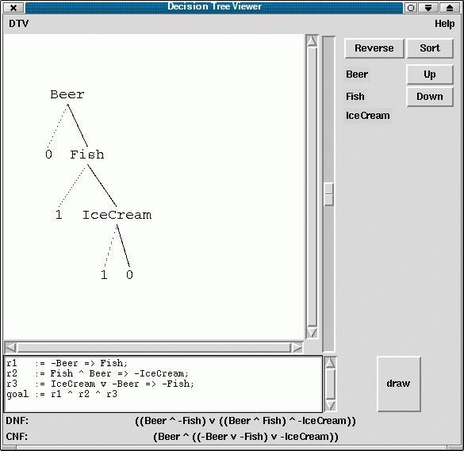

Visualization of boolean (prime) decision trees
mogul:/tack/TkTreeWidgetozmake --install -p [FILENAME]ozmake --install -p mogul:/tack/DecisionTree
dtv at the command line. The main
window should open.
At the bottom of the window, you find a text area where you can enter the boolean formula. The simple syntax for formulae is as follows:
sf ::= false
| true
| X
| -sf
| sf1 ^ sf2
| sf1 v sf2
| sf1 => sf2
| sf1 <=> sf2
| (sf)
Where X is a variable (a string beginning with an uppercase letter).
There is an extended syntax, allowing for abbreviations (or macros) of formulae:
flist ::= goal := sf
| y := sf;flist
Where y is a macro name (a string beginning with a lowercase
letter). In an extended formula, a macro name can appear instead
of a variable (in case it has been defined before).
This is an example for a formula in extended syntax, taken from a course on logics at Saarland University:
"What is the secret of your long life?" a hundred-year-old is asked. He replies: "I strictly obey three rules: Anytime I don't drink beer, I eat fish. If I have fish as well as beer, I won't eat ice cream. Should I eat ice cream or not drink beer, I won't have fish."
This problem could be modelled as follows:
r1 := -Beer => Fish;
r2 := Fish ^ Beer => -IceCream;
r3 := IceCream v -Beer => -Fish;
goal := r1 ^ r2 ^ r3
If you order the variables as Beer < IceCream < Fish, you can see that the old man always drinks beer (this doesn't seem to be a surprise ;-), but eats only either fish or ice cream.
This is what the output of dtv for this example may look like:
